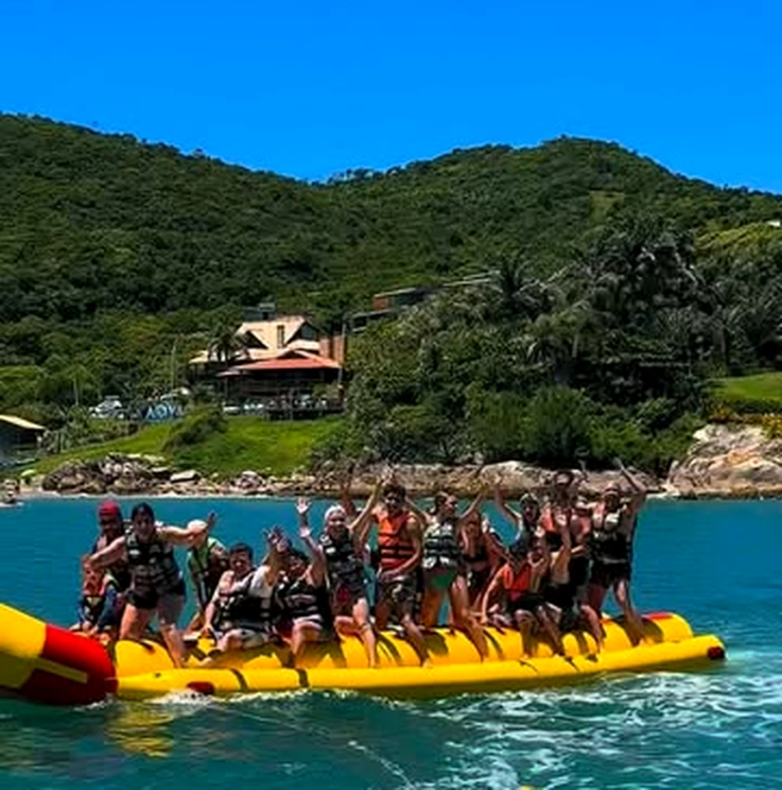
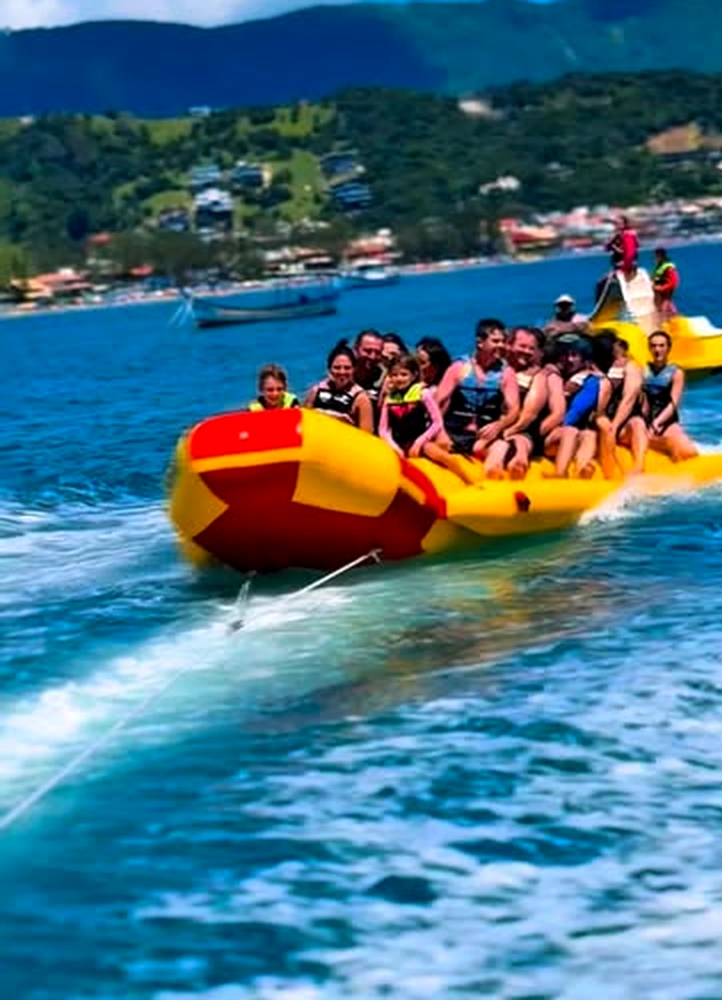
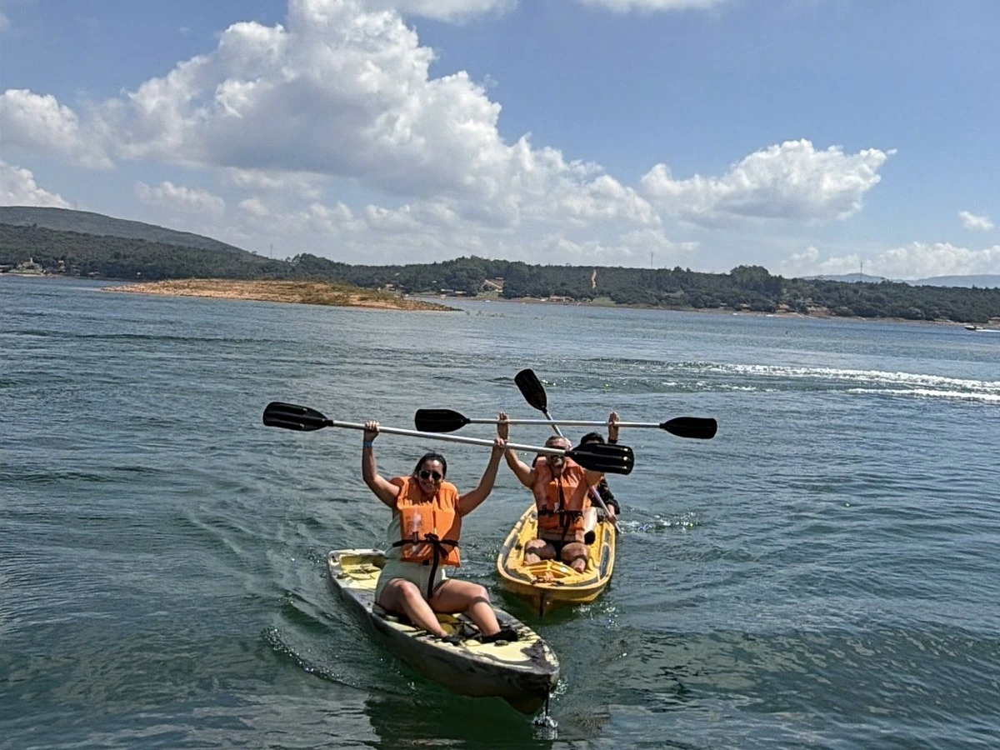
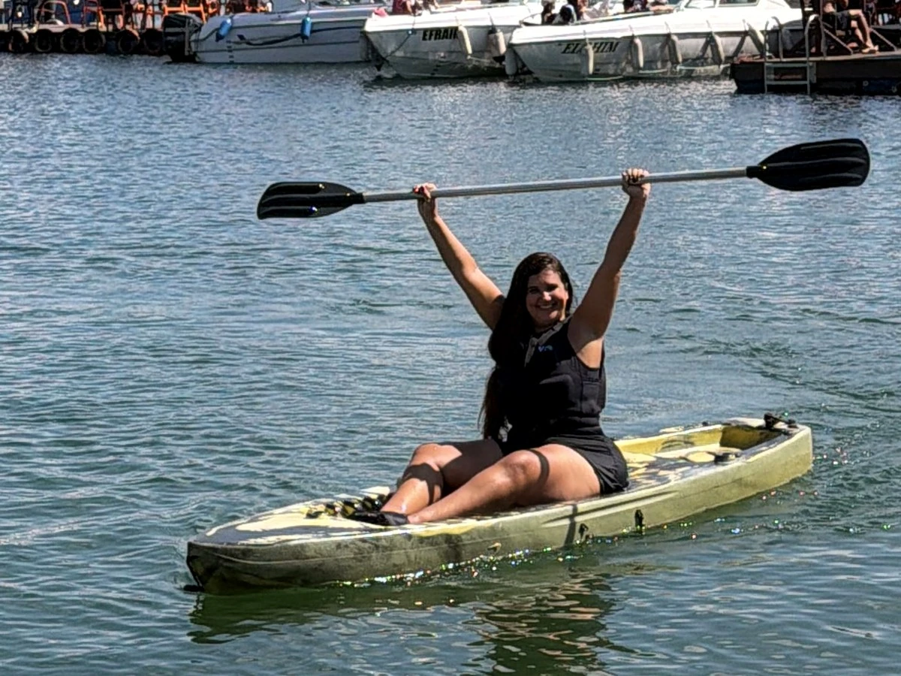
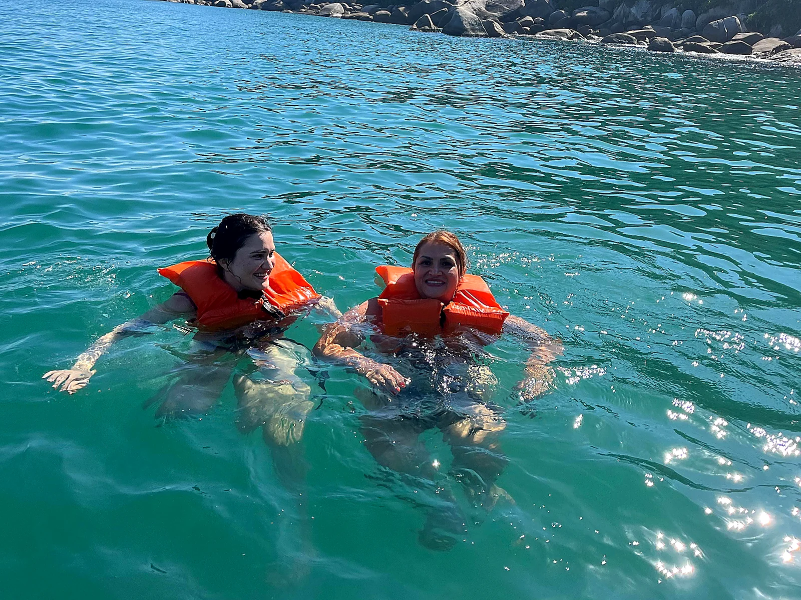
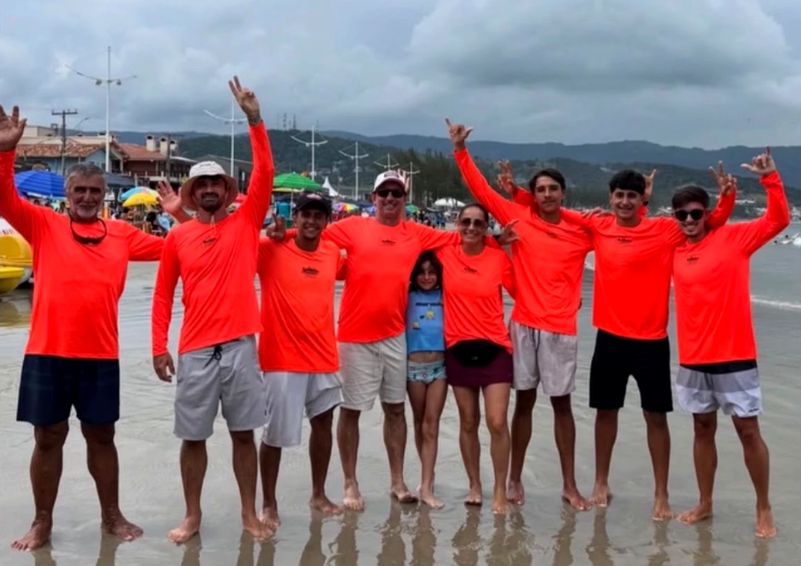
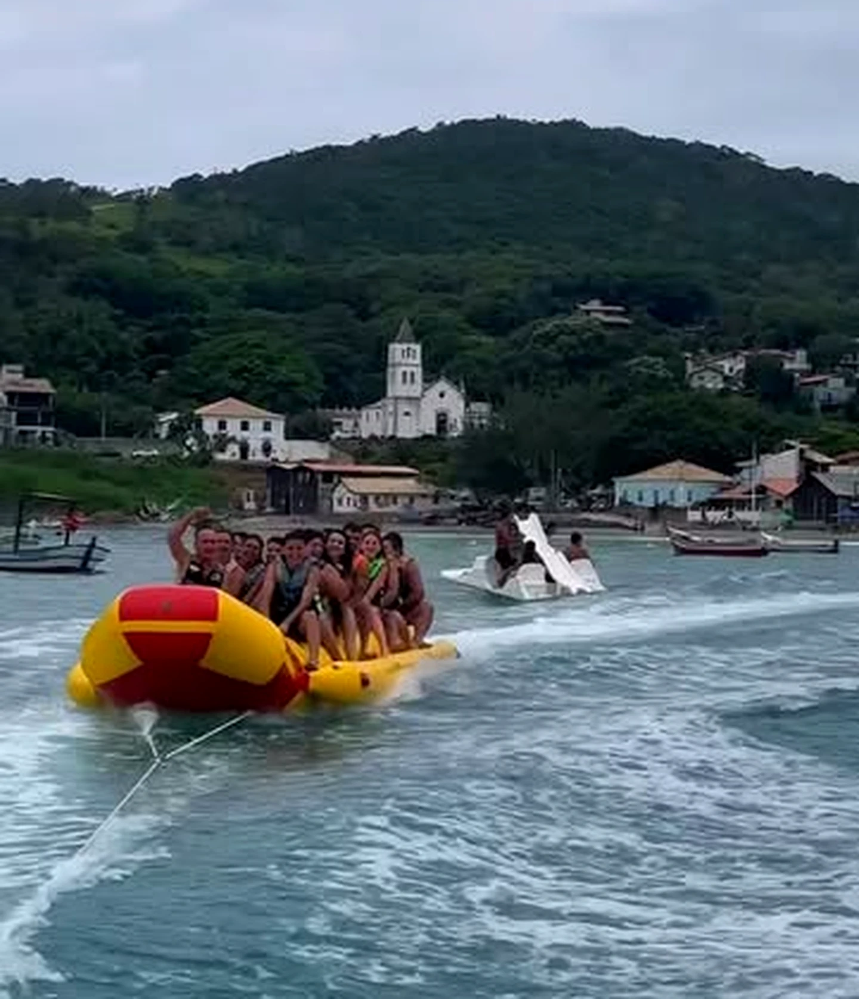
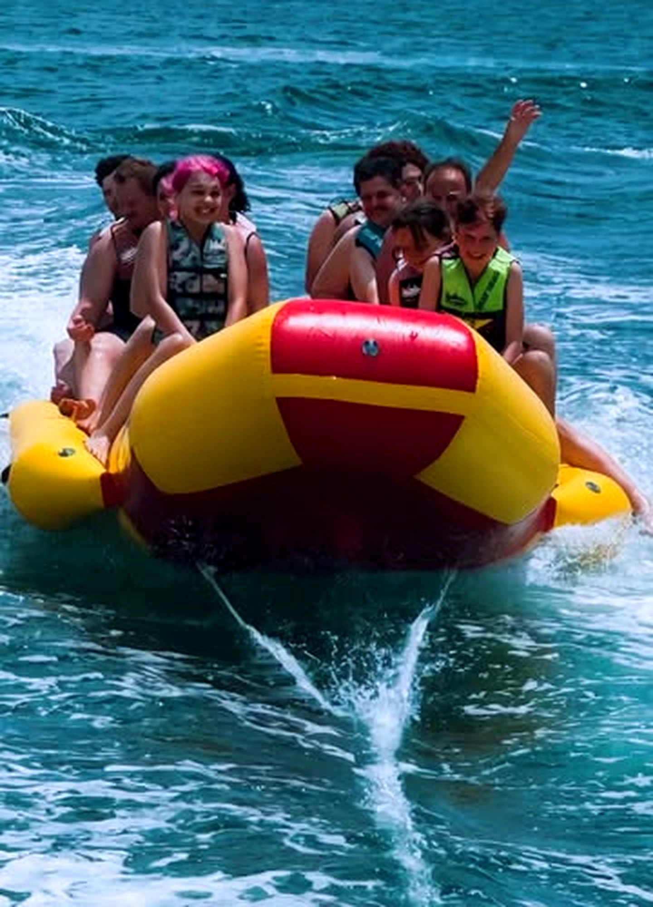
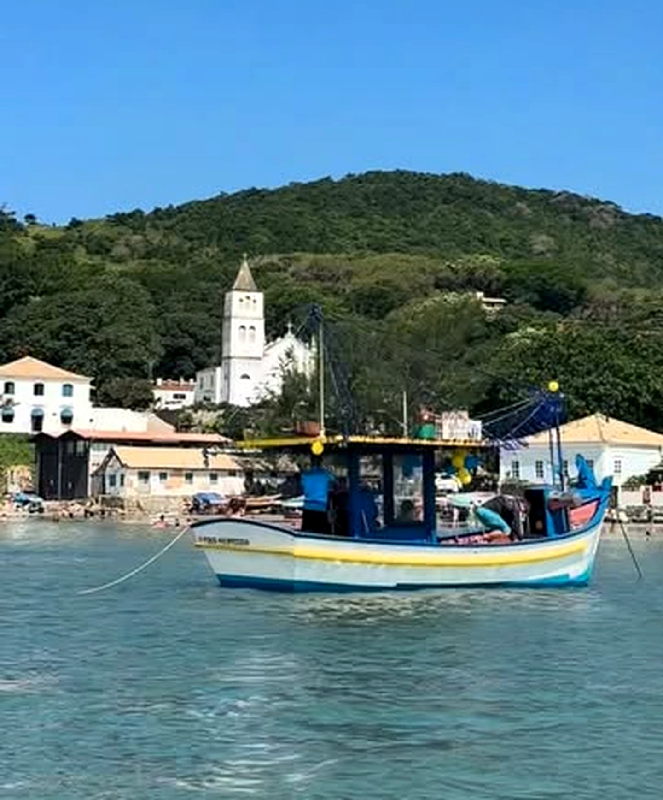

20 Lugares
Banana Boat 20 Lugares
Nosso famoso Banana Boat para até 20 pessoas! Reúna toda a família e os amigos para um passeio inesquecível pela baía de Garopaba com marinheiro habilitado.

Com Edmundo, Mônica e nossa equipe na Praia Central: passeios no Banana Boat de 20 lugares, Pedalinhos com escorregador, Caiaques e Stand Up Paddle (SUP) nas águas mansas do Centro Histórico.
Saídas direto da areia no canto sul (Centro Histórico / Rancho de Pescadores), onde o mar de Garopaba é calmo, abrigado e perfeito para todas as idades.

Nosso famoso Banana Boat para até 20 pessoas! Reúna toda a família e os amigos para um passeio inesquecível pela baía de Garopaba com marinheiro habilitado.

O clássico das férias em Garopaba! Pedalinhos estáveis e divertidos (incluindo modelos com escorregador) para passear e mergulhar nas águas mansas.

Remada leve pelas águas transparentes do Centro Histórico, contornando os barcos artesanais e admirando a igrejinha histórica vista do mar.

Pranchas de SUP grandes e estáveis para remar em pé ou ajoelhado na verdadeira piscina natural que se forma no canto sul da Praia de Garopaba.

Quem chega na Praia Central de Garopaba já reconhece de longe nossas camisas laranjas na beira d'água. Há 32 anos, o Edmundo e sua esposa Mônica recebem gerações de famílias e turistas com carinho, alegria e total atenção à segurança no mar.
Veja registros reais dos nossos passeios de Banana Boat com a Igreja Histórica e o Centro de Garopaba ao fundo.

Banana Boat com vista do Centro Histórico de Garopaba
Alegria garantida com coletes inclusos
Tradição marítima no Canto SulFicamos próximo ao Rancho de Pescadores, onde as águas são protegidas e tranquilas para embarcar direto da areia.
Nossa equipe veste e confere os coletes salva-vidas de cada participante e orienta sobre o passeio escolhido.
Viva a emoção do Banana Boat com a galera ou curta o mar calmo de pedalinho, caiaque e Stand Up Paddle.
Escolha a atração abaixo e envie mensagem pronta para consultar valores, horário das saídas do Banana Boat de 20 lugares e condições do mar.
Há 32 anos! O Edmundo, a esposa Mônica e toda a equipe de camisa laranja são tradição na Praia Central de Garopaba, garantindo diversão segura para famílias e turistas.
Nosso Banana Boat comporta até 20 lugares! Dá para levar a família inteira ou a turma de amigos junta no mesmo passeio, ou entrar nas saídas que formamos na praia.
Temos o Banana Boat de 20 lugares, Pedalinhos (incluindo modelos com escorregador), Caiaques individuais e duplos e pranchas de Stand Up Paddle (SUP), todos com coletes salva-vidas inclusos.
É só clicar no botão de WhatsApp do site para falar no (48) 99965-5708 direto com o Edmundo e a Mônica, ou chegar no nosso ponto na areia do Centro Histórico.